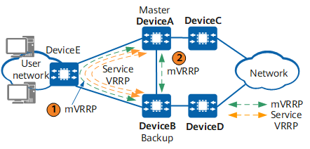

Understanding mVRRP
Application Scenarios
A device is usually dual-homed to two devices for improved network reliability, and multiple VRRP groups can be configured on the two devices to transmit various types of services. As each VRRP group maintains its own state machine, a large number of VRRP Advertisement packets are transmitted between devices.
To reduce bandwidth and CPU resource consumption during transmission of VRRP Advertisement packets, you can configure a VRRP group as a management Virtual Router Redundancy Protocol (mVRRP) group. Other VRRP groups are then bound to the mVRRP group and function as service VRRP groups, with only the mVRRP group sending VRRP Advertisement packets to negotiate the master/backup state of devices. Service VRRP groups do not send VRRP packets, and their master/backup states are determined by the state of the mVRRP group.
- The mVRRP group is deployed on the same side as the service VRRP group.
- The mVRRP group is configured on the interfaces that directly connect DeviceA and DeviceB.

Bound Object |
Application Scenarios |
|---|---|
Common VRRP group |
If multiple VRRP groups are configured to forward traffic, large numbers of VRRP Advertisement packets are generated, which consumes network bandwidth resources and affects CPU performance. To resolve this issue, configure an mVRRP group to which you can bind common VRRP groups. The mVRRP group sends VRRP Advertisement packets to determine the master/backup state of the bound common VRRP groups. |
Service interface |
VRRP-disabled interfaces can be bound to an mVRRP group. A master/backup mVRRP switchover can trigger a master/backup switchover on these interfaces, preventing traffic loss. |
Related Concepts
mVRRP group
Similar to a common VRRP group, an mVRRP group also sends VRRP Advertisement packets to negotiate the master/backup state of VRRP devices. An mVRRP group provides the following functions:
- When the mVRRP group functions as a gateway, it negotiates the master/backup state of devices and transmits services. In this scenario, a common VRRP group with the same VRID as that of the mVRRP group must be configured and assigned a virtual IP address. This virtual IP address becomes the gateway address configured for users.
- If the mVRRP group does not function as the gateway, it only negotiates the master/backup state of devices instead of transmitting services. In this scenario, the mVRRP group does not require a virtual IP address, and the mVRRP group can be directly configured on an interface. This configuration results in simplified maintenance.
Service VRRP group
A common VRRP group becomes a service VRRP group after it is bound to an mVRRP group. A service VRRP group does not send VRRP Advertisement packets, and the master/backup state of devices in the service VRRP group is determined by the state of the interface where the service VRRP group resides and the master/backup state of the devices in the mVRRP group. A service VRRP group can be associated with an mVRRP group in either of the following modes:
- Flowdown: This mode applies to networks on which both user-to-network and network-to-user traffic is transmitted over the same path. If the mVRRP group enters the Backup or Initialize state, all service VRRP groups that are associated with the mVRRP group in flowdown mode enter the Initialize state.
- Unflowdown: This mode applies to networks on which user-to-network and network-to-user traffic is transmitted over different paths. If the mVRRP group enters the Backup or Initialize state, all service VRRP groups that are associated with the mVRRP group in unflowdown mode enter the same state.

Multiple service VRRP groups can be bound to an mVRRP group. However, the mVRRP group cannot be bound to another mVRRP group as a service VRRP group.
If the interface where a service VRRP group resides goes down, the service VRRP group changes to the Initialize state and its state is no longer determined by the mVRRP group.